|
gallagherstory.com
Mark Gallagher's Motorcycle Page
Purpose of this site:
share the hobby of
buying used bikes in great shape, ride them a few years, sell them and buy
other used bikes.
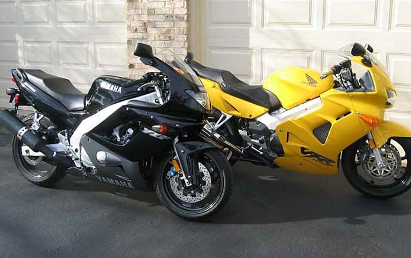
Two of my favorite bikes
- 2002 Yamaha YZF600R Thundercat
and 2000 Honda VFR
800fi Interceptor
Bikes I have owned in the past (chronological order)
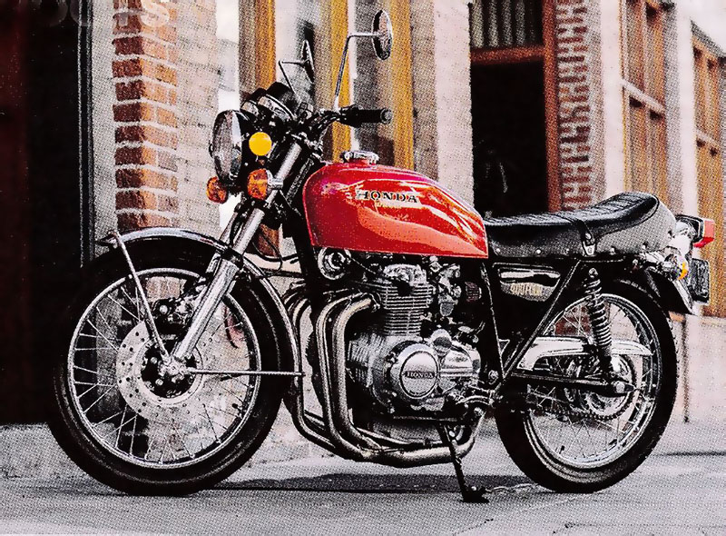 1975
Honda CB400F Great bike, four into one exhaust, my ideal of
what a bike should look like. Purchased new in 1976, I sold it in
1980 when I was leaving college and needed the money.
The bike now has a cult following and they are rare and hard to find in good shape.
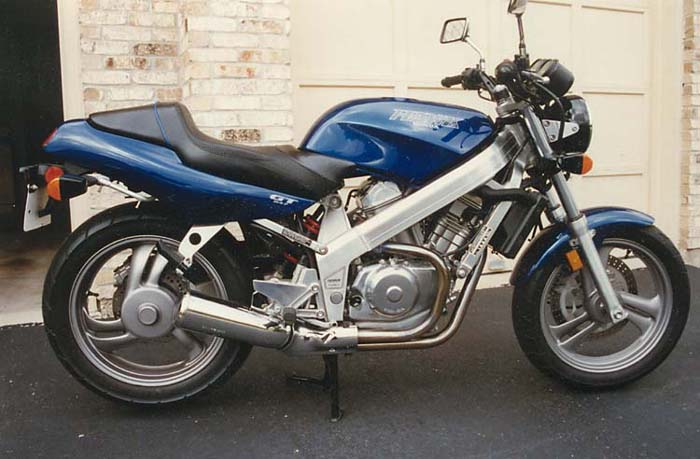 1988
Honda Hawk GT I purchased this new in 1988, I sold it in
1996. Beautiful naked bike with plenty of low-end torque from
that V-twin engine. A great city bike, very light and easy to ride. I should have kept this
one.
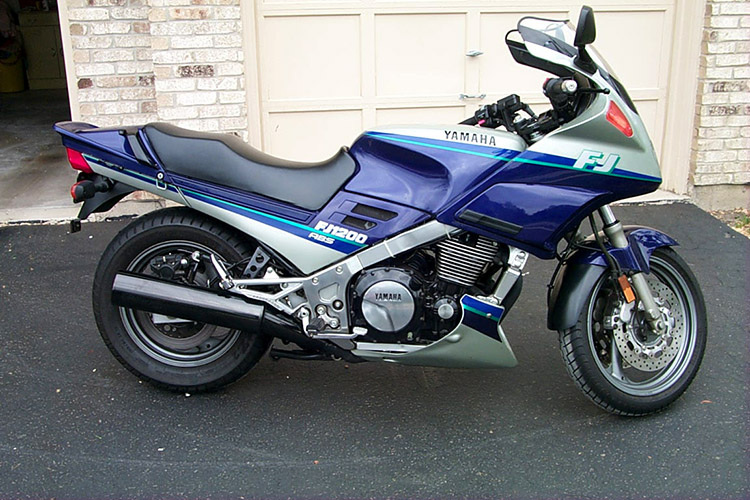 1993
Yamaha FJ1200 A big and powerful bike with ABS brakes, the in-line four delivers 130hp.
This bike is like a rock on the interstate but a heavy bike and a handful to ride at slow speeds.
I bought it used in 1997 and sold it in 2000.
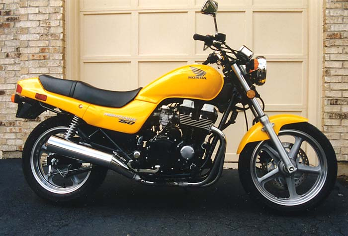 1996
Honda CB750 Nighthawk I purchased this used in 1997 and sold it in
2004. I added a Honda center stand, engine
guards and Michelin radials. Cool bike but the suspension was soft
and never totally in love with this bike.
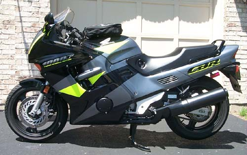1996
Honda CBR1000F Lots of power and a great ride. I purchased it
used in 2002 and sold it in 2004. The most powerful bike I have ever owned at 132hp,
but the riding position was a bit cramped.
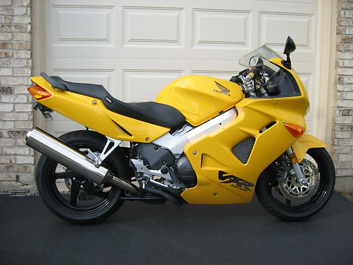
2000 Honda VFR Interceptor
This is the awesome VFR with fuel
injection. I purchased it used from Todd in Lemont,
Illinois in June, 2004 for $6,200. When I purchase this bike
it had only 2,700 miles and included the Corbin seat, handlebar
risers and throttlemeister cruise control. I loved this bike.....very
powerful but comfortable. I sold the bike to Doug from
Wisconsin in May of 2006.
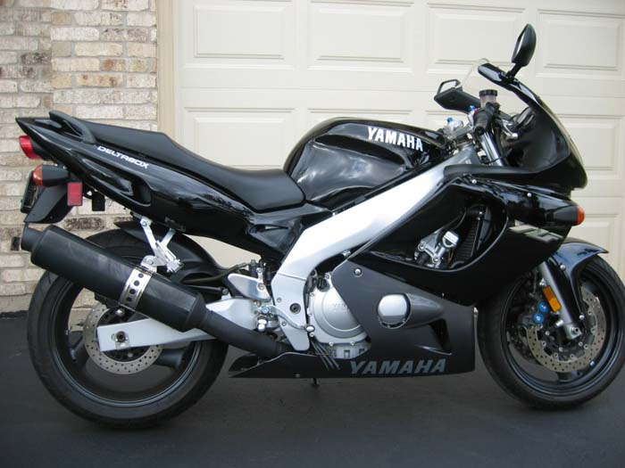
2002 Yamaha YZF600r Thundercat
One of
my favorite bikes -
the beautiful Thundercat. I purchased it slightly used from Joe
in Streamwood, Illinois in November of 2004,
kept it in perfect shape, and sold it in 2013. It
was a true sport bike but a comfortable riding position. The Deltabox frame is
awesome, the engine was smooth and just a perfectly balanced bike.
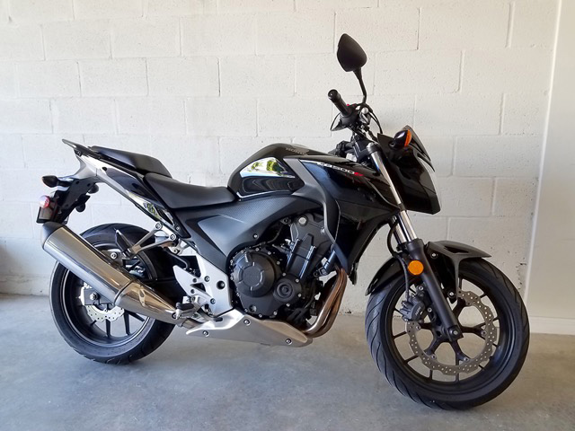
2014 Honda
CB500F
The current bike in the
garage, I bought it used with only 800 miles in October, 2016.
This is a well-balanced, mid-range bike with a beautiful and simple
design. The riding position is comfortable and the engine is
smooth.
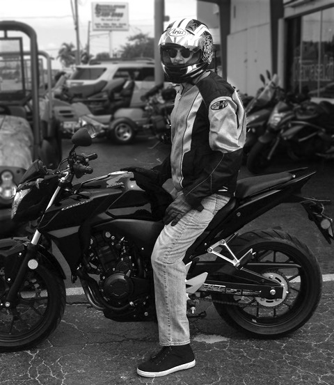
That's me picking up the
CB500F at the Honda dealer, October, 2016.
Bonus Photos:

Vintage Motorcycle Show,
West Palm Beach, Florida - 2016
(not my
bikes)
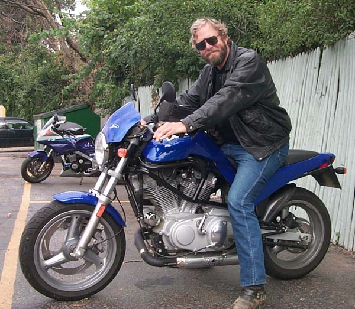
One of my riding buddies - Paul on his Buell with
my old FJ1200 in the background (1999)
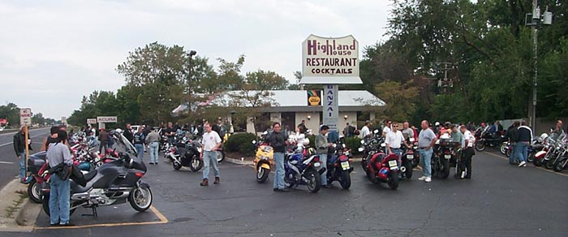
Highland House Restaurant in Highland
Park, Illinois (1999), this was the best place in the Chicago area to get
together with other bikers on a Sunday morning (the
restaurant closed in 2003).
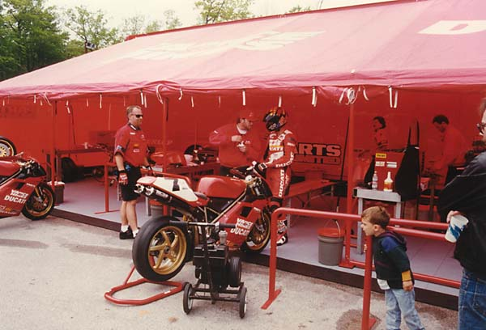
Some of the best motorcycle racingI watched was at
the AMA Super Bike Racing at Road America
in Elkhart Lake, Wisconsin . This is a shot of the Ducati tent in the
Paddock area of the track in 1999.
Ride safe.
Mark Gallagher
Last Updated: 2026
Feedback / Questions:
gallagher.mark@gmail.com
gallagherstory.com
|